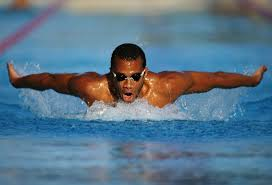
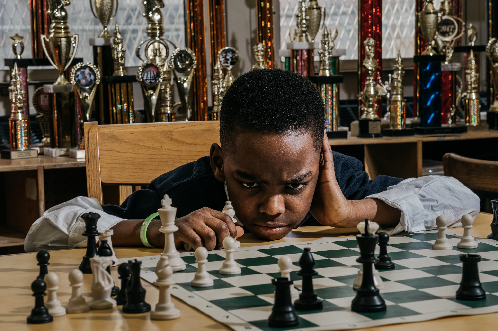

This is where you throw yourself in a pool of water and try not to drown. Eventually, you get it right and begin doing crazy styles like;

Maybe one day I will be a world class swimmer. Hoping my belly doesnt bulge too much from the mutuura and beers I take
You will need to have a chess board, learn the moves of the 'men' and then progress to advanced skills. Some of these skills include;

COVID ikiisha nakuja tufanye katournament huko. Missed played new opponents for some time btw
Wacha niandkie swahili ndio I don't get into trouble. So basically, I am a ghost writer. Nimechora articles mob. hadi at za magazeti but what I mostly do includes academic stuff such as;
I have been trying to get into technical writing but kuna tools najitrain kutumia mdogo mdogo tu. Lazima tuivishe bana!!!
Coding is my new favorite thing